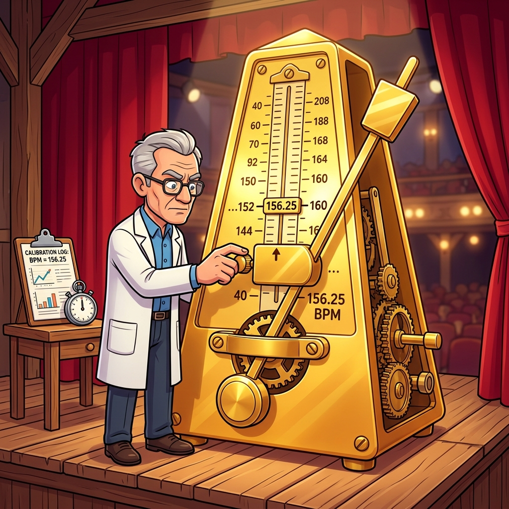

Section 2.2: Constraints: Telling the Tools What to Do
If timing closure is a ballet, then XDC (Xilinx Design Constraints) is the script. Without it, the dancers have no idea when to move, and the orchestra is playing whatever they want. In the world of AMD FPGAs, the tools are incredibly smart, but they aren't psychic. If you don't tell them exactly what your timing requirements are, they will optimize for the wrong things, and your design will be a disorganized mess.
Constraints are the bridge between your high-level HDL and the physical reality of the chip. They tell Vivado, "This clock runs at 156.25MHz," and "This input arrives 2ns after the clock." Without these rules, Vivado will just try to make everything as fast as possible, which ironically leads to a design that is slower and harder to close.
The XDC Language: Commands, Not Suggestions
XDC is based on the industry-standard SDC (Synopsys Design Constraints) format, but with some AMD-specific secret sauce. It’s a Tcl-based language, which means it’s powerful and flexible. But with great power comes the ability to completely shoot yourself in the foot.
The most important thing to remember is that constraints are strict orders. If you set a constraint that is physically impossible—like asking for 100Gbps through a single LUT—the tool will spend hours trying to achieve it, eventually failing and giving you a "routing congestion" error. You have to be realistic. The tools are your partners, not your slaves.
Brain Power If you have a 100MHz clock but you don't constrain it, Vivado will treat it as unconstrained. Will the timing report show a failure? Or will it just say "No paths found"? What are the risks of ignoring unconstrained paths?
Primary Clocks: Defining the Heartbeat
Everything starts with the primary clock. This is the clock that enters the FPGA from an external pin. It’s the "Master Beat" of your entire system. If you get this wrong, every other timing calculation in your design will be incorrect.
The create_clock command is your first line of defense. You need to specify the period and the port it’s attached to. AMD’s UltraFast methodology recommends defining your primary clocks as early as possible in the design cycle. If you change your clock frequency later, you’ll have to re-evaluate every single constraint in your file.

Generated Clocks: The Derived Beats
Most modern designs don't just use one clock. They use PLLs (Phase-Locked Loops) or MMCMs (Mixed-Mode Clock Managers) to create new clocks from the primary one. These are "Generated Clocks." Vivado derives these for you automatically wherever it can read the ratio out of a hard block — it knows an MMCM's CLKFBOUT_MULT_F and CLKOUT*_DIVIDE properties, so it can compute the output period itself. Where it cannot read the ratio, because you built the divider out of fabric logic, you must state it with create_generated_clock.
The danger here is "Clock Latency." A generated clock is always slightly delayed compared to its source. Vivado handles this automatically, but if you have a complex clock tree with multiple levels of division and multiplication, the uncertainty adds up. Keep your clock trees as shallow as possible to avoid the "latency tax."
Fireside Chat: The Primary Clock and the PLL
Primary Clock: "I'm the boss. I come from a high-quality crystal oscillator outside the chip. I'm stable, I'm clean, and I set the pace for everything."
PLL: "Yeah, yeah, you're the boss, but I'm the one who does the work. I take your boring 100MHz and turn it into 400MHz for the memory controller and 25MHz for the LED blinker. I'm the flexible one here."
Primary Clock: "Flexible? You're a jitter factory! Every time you multiply me, you add uncertainty. If you aren't careful, you'll ruin the timing for the entire SLR."
PLL: "I'm just following orders! If the constraints say I need to be 400MHz, I'll be 400MHz. Just make sure the human tells me what to do, or I'll just sit here and vibrate."
The False Path Escape Hatch
Sometimes, you have signals that cross between clock domains where timing doesn't matter. Maybe it’s a configuration register that only changes once a year. In these cases, you can use a set_false_path constraint. This tells Vivado, "Ignore this path. Don't waste any effort trying to make it fast."
WARNING: False paths are the most abused constraint in the world. Engineers use them to "hide" timing failures they don't know how to fix. If you set a false path on a signal that actually does need to be synchronized, you’ll get intermittent data corruption that is almost impossible to debug. The UltraFast methodology says: Use false paths only as a last resort, and always use a proper synchronization circuit (like a 2-stage flip-flop) first.
Multi-Cycle Paths: Negotiating for Time
A multi-cycle path (set_multicycle_path) is a way to tell Vivado that a piece of logic has more than one clock period to complete its work. This is common in DSP operations or slow control loops. It’s like telling your boss, "I know the deadline is tomorrow, but I have a special permit to turn this in next week."
This is a great way to reduce power and congestion, but you have to be careful. If you tell the tools it's a multi-cycle path of 2, but your logic actually changes every cycle, you’ll get garbage data. You must ensure your RTL (the "Enable" signals) actually respects the multi-cycle constraint.
Code Detective: The XDC Conflict
Vivado processes constraints in the order they appear in the file. If you have two constraints that affect the same path, the last one wins.
# Code Detective: Which constraint is active for the 'clk_main' clock?
create_clock -period 10.000 -name clk_main [get_ports sys_clk]
create_clock -period 5.000 -name clk_fast [get_ports sys_clk]
# Hint: Look at the port names. Can one pin have two master clocks?
The flaw here is that the user is trying to define two different clocks on the same physical port. The second create_clock silently replaces the first — and "silently" is the dangerous word, because clk_main still exists as a name you can reference in later constraints, so a set_false_path -from [get_clocks clk_main] further down the file quietly matches nothing.
The fix depends on which of two situations you are actually in:
# Case A: the port really does run at one frequency, and the second line was a
# leftover from a previous board revision. Delete it. Then prove no other constraint
# referenced the name you removed:
create_clock -period 10.000 -name clk_main [get_ports sys_clk]
report_clocks ;# confirm exactly the clocks you expect exist
check_timing -verbose ;# no_clock, unconstrained_internal_endpoints, ...
# Case B: the port genuinely carries two frequencies in two operating modes
# (a board strap, a different oscillator fitted). Constrain BOTH, then analyse
# one mode at a time - Vivado can hold two clocks on a port, it just cannot
# analyse them as if both were live simultaneously.
create_clock -period 10.000 -name clk_slow [get_ports sys_clk]
create_clock -period 5.000 -name clk_fast [get_ports sys_clk] -add
# Declare them mutually exclusive so the tool does not analyse cross-mode paths
# that can never exist:
set_clock_groups -physically_exclusive \
-group [get_clocks clk_slow] \
-group [get_clocks clk_fast]
Note -add on the second create_clock: without it you get replacement, with it you get
coexistence. And note -physically_exclusive rather than -asynchronous — the two
clocks are not asynchronous to each other, they are never present at the same time,
which is a different (and stronger) statement that removes the paths entirely instead of
merely declining to time them.
The habit that prevents the whole class of bug: end every constraint file with
report_clocks and check_timing during development. check_timing reports the
categories that silently ruin timing sign-off — no_clock, no_input_delay,
no_output_delay, unconstrained_internal_endpoints, multiple_clock — and each one is
a hole where the tool is reporting success because you never asked it a question.
Analogy → Silicon
| In the story | In the silicon | Where the analogy breaks |
|---|---|---|
| The script of the ballet | The .xdc file, evaluated as Tcl in file order |
A script is descriptive; XDC is the definition of correctness. If it is wrong, a passing timing report is a wrong answer, not a lenient one |
| Strict orders, not suggestions | create_clock, set_input_delay, set_max_delay |
Orders can be refused audibly; an over-tight constraint mostly manifests as runtime and congestion, not as an error message |
| Special permit to file late | set_multicycle_path |
A permit is one document; a multicycle needs two constraints (setup and hold) or you have created a hold violation you cannot see |
| Escape hatch | set_false_path |
An escape hatch is a way out of a real building; a false path deletes the check entirely, including for the case you did not think about |
| The boss and the flexible worker | Primary clock via create_clock on a port; derived clocks auto-generated at MMCM outputs |
The worker reports to the boss; a create_clock written on an internal pin severs that relationship and the tool stops tracking it |
Do the Math
The constraint people get wrong most often is set_input_delay, because it asks you to
describe the outside world — and the sign convention feels backwards until you have
derived it once.
set_input_delay declares how long after the clock edge the data arrives at the FPGA
pin, measured in the launching device's timeline. For a system-synchronous interface
(one clock source feeds both the external device and the FPGA):
Givens — from the external device's datasheet and your board's length report:
| Symbol | Meaning | Value |
|---|---|---|
| \(T_{co,\max}^{\text{ext}}\) | External ADC clock-to-out, max | 3.200 ns |
| \(T_{co,\min}^{\text{ext}}\) | External ADC clock-to-out, min | 1.100 ns |
| \(T_{\text{pcb,data}}\) | Data trace flight time (min/max over the bus) | 0.420 / 0.510 ns |
| \(T_{\text{pcb,clk}}\) | Clock trace flight time to the FPGA (min/max) | 0.380 / 0.450 ns |
| \(T_{\text{clk}}\) | Interface clock period | 10.000 ns |
Which becomes:
set_input_delay -clock adc_clk -max 3.330 [get_ports {adc_data[*]}]
set_input_delay -clock adc_clk -min 1.070 [get_ports {adc_data[*]}]
Now check that the interface is even possible, before you spend a day closing it. The window the FPGA has left to capture the data is:
5.6 ns of capture window at 100 MHz — comfortable. Run the same arithmetic at 300 MHz (3.333 ns period):
Negative. The data valid window is shorter than zero: this interface cannot be
captured with a single edge on this clock, at any placement, with any constraint you
write. That is not a timing closure problem, it is a board or interface architecture
problem, and the answer is source-synchronous capture with an IDELAY element, or a
different interface entirely.
Verdict: the input delay arithmetic tells you whether an interface is feasible before you commit to it. Doing it after implementation, when the tool reports failure, is doing it too late to change anything cheaply.
The Real Artifact
A constraint file is a document with an argument structure, and the order of its sections is not cosmetic — later constraints override earlier ones with the same scope, and exceptions are applied in a fixed precedence regardless of file order.
#==============================================================================
# top.xdc - ordered by the standard XDC section sequence.
#
# Two rules that are easy to state and easy to violate:
# 1. FILE ORDER matters for same-type constraints: the last one wins, silently.
# 2. EXCEPTION PRECEDENCE does not follow file order. Vivado applies:
# set_false_path > set_max_delay/set_min_delay > set_multicycle_path
# A false path further down the file still beats a multicycle further up.
# This is why "my multicycle isn't working" is nearly always a false path
# somewhere else in the repo swallowing the same endpoints.
#==============================================================================
#------------------------------------------------------------------------------
# 1. TIMING ASSERTIONS - what the clocks are. Nothing else can be right until
# these are.
#------------------------------------------------------------------------------
create_clock -period 10.000 -name sys_clk [get_ports sys_clk_p]
create_clock -period 8.000 -name adc_clk [get_ports adc_clk_p]
# Jitter the tool cannot know about: the reference oscillator's own spec.
set_input_jitter sys_clk 0.050
set_input_jitter adc_clk 0.120
#------------------------------------------------------------------------------
# 2. I/O DELAYS - describing the world outside the package. See "Do the Math".
#------------------------------------------------------------------------------
set_input_delay -clock adc_clk -max 3.330 [get_ports {adc_data[*]}]
set_input_delay -clock adc_clk -min 1.070 [get_ports {adc_data[*]}]
# Outputs: how much of the period the receiving device needs before/after the edge.
# max = its setup requirement + max board flight time
# min = -(its hold requirement) + min board flight time <- note the sign
set_output_delay -clock sys_clk -max 2.100 [get_ports {dac_data[*]}]
set_output_delay -clock sys_clk -min -0.400 [get_ports {dac_data[*]}]
#------------------------------------------------------------------------------
# 3. CLOCK GROUPS - which domains are genuinely unrelated. Declaring this
# explicitly is what turns "unanalysed" into "deliberately not analysed".
#------------------------------------------------------------------------------
set_clock_groups -asynchronous \
-group [get_clocks -include_generated_clocks sys_clk] \
-group [get_clocks -include_generated_clocks adc_clk]
#------------------------------------------------------------------------------
# 4. TIMING EXCEPTIONS - narrowest scope first, and every one of them commented
# with WHY it is safe. An uncommented exception is a future outage.
#------------------------------------------------------------------------------
# Config register written once at boot from software, read by the datapath.
# Safe as a multicycle because the write enable is asserted for >= 4 cycles and
# the datapath never samples it during that window. See u_cfg/gate_en.
set_multicycle_path -setup 4 \
-from [get_cells u_cfg/cfg_reg*] -to [get_cells u_dsp/coef_reg*]
set_multicycle_path -hold 3 \
-from [get_cells u_cfg/cfg_reg*] -to [get_cells u_dsp/coef_reg*]
# CDC into the status domain, already protected by a 2-flop synchronizer.
# Bound the crossing so it cannot take longer than one destination period, and
# bound the skew so multi-bit fields cannot tear. NOT a false path - a false
# path here would let the router make the crossing arbitrarily long.
set_max_delay -datapath_only 4.000 \
-from [get_cells u_core/stat_reg*] -to [get_cells u_sync/stat_meta_reg*]
set_bus_skew 2.000 \
-from [get_cells u_core/stat_reg*] -to [get_cells u_sync/stat_meta_reg*]
#------------------------------------------------------------------------------
# 5. SELF-CHECK - run these every time this file changes.
#------------------------------------------------------------------------------
# report_clocks - exactly the clocks you meant, no more
# check_timing -verbose - the holes: no_clock, no_input_delay,
# unconstrained_internal_endpoints
# report_exceptions -ignored - exceptions overridden by another exception
# report_timing_summary -report_unconstrained
report_exceptions -ignored deserves special attention. It lists every exception that
Vivado parsed, accepted, and then discarded because a higher-precedence exception covered
the same paths. That list is where "but I constrained that!" goes to die.
Sharpen Your Pencil
- An external device specifies \(T_{co}\) of 2.0 ns min / 4.5 ns max. Your data traces
are 0.30–0.35 ns and the clock trace is 0.60–0.65 ns. Compute the
-maxand-mininput delays, then the capture window at a 8.000 ns period. - You want a path from a slow control register to a datapath register to take four
cycles. Write both required constraints. Then explain, in one sentence, what happens
if you write only the
-setupone. - Your
set_multicycle_pathappears inreport_exceptionsbut the path still shows a one-cycle requirement inreport_timing. Name the single most likely cause and the command that confirms it.
Final Thoughts on Constraints
Constraints are the ultimate "Truth" in your design. They are how you communicate your intent to the silicon. A design with perfect RTL but bad constraints will never work. A design with mediocre RTL but perfect constraints has a fighting chance. Learn the language of XDC, respect the hierarchy, and never, ever use a false path to hide a real problem.
Answers
Brain Power — An unconstrained 100 MHz clock: does the report show a failure, or "no paths found"?
Neither, and that is precisely the danger. report_timing_summary will show the clocks
it knows about — and this one is not among them — so the summary looks clean. WNS will
be a healthy positive number computed over the constrained portion of your design, and
the unconstrained logic contributes nothing to it because it was never analysed.
What you actually get:
- Paths in the unconstrained domain are not optimised for timing. The placer and router have no requirement to meet, so they optimise for wirelength and congestion and give you whatever frequency falls out — often 60–100 MHz on a design you believed ran at 250 MHz.
check_timingreports it underno_clock, andreport_timing_summary -report_unconstrainedlists the endpoints. Neither runs by default in a "click Generate Bitstream" flow.- Crossings between the unconstrained domain and your real clocks are unanalysed in both directions, so genuine CDC bugs sail through.
The risk in one sentence: an unconstrained path does not fail, it lies. A design with
one unconstrained clock and 0.500 ns of WNS is in worse shape than a design with −0.050 ns
of WNS and complete constraints, because the second one you can fix and the first one you
do not know is broken. Run check_timing -verbose and
report_timing_summary -report_unconstrained on every build; treat no_clock and
unconstrained_internal_endpoints as errors.
Sharpen Your Pencil #1 —
set_input_delay -clock ext_clk -max 4.250 [get_ports {data[*]}]
set_input_delay -clock ext_clk -min 1.650 [get_ports {data[*]}]
Capture window at 8.000 ns:
2.1 ns is workable but not generous — it is about a quarter of the period, and it leaves
little room for the FPGA's own input path uncertainty. Worth noticing: the clock trace
being longer than the data traces cost you nothing here and in fact helped, by
subtracting from -max. Deliberately lengthening the clock trace is a real (if crude)
board-level technique for buying setup margin on a system-synchronous input.
Sharpen Your Pencil #2 —
set_multicycle_path -setup 4 -from [get_cells u_cfg/ctrl_reg*] -to [get_cells u_dsp/dat_reg*]
set_multicycle_path -hold 3 -from [get_cells u_cfg/ctrl_reg*] -to [get_cells u_dsp/dat_reg*]
If you write only the -setup 4: you have moved the setup capture edge out by four
cycles, and moved the hold check with it. The hold check now compares against an edge
three cycles later than the launch, so the tool demands the data stay stable for three
extra cycles — a requirement almost nothing satisfies. You will see a large, baffling
crop of hold violations appear on paths you just "relaxed."
The rule to memorise: -hold is always N-1 for a setup multicycle of N in the
common same-clock case. The -setup constraint alone is not half a fix, it is a new bug.
Sharpen Your Pencil #3 — Most likely cause: a set_false_path elsewhere covers the
same endpoints. Exception precedence is set_false_path > set_max_delay/set_min_delay
set_multicycle_path, and it does not care about file order — a false path in a constraints file read after yours, or in an IP's own XDC, silently outranks your multicycle.
Confirm with:
which lists exactly the exceptions Vivado accepted and then discarded, and why. If your
multicycle appears there, you have your answer. report_exceptions -coverage is the
companion — it shows which exceptions are doing nothing because they match no paths at
all, usually because a cell name changed and the get_cells pattern quietly returned an
empty list.
That empty-list failure mode is worth its own habit: a get_cells that matches nothing
is not an error in Tcl, so a constraint referencing a renamed instance simply stops
applying. Guard the important ones:
set cfg_regs [get_cells -quiet u_cfg/cfg_reg*]
if {[llength $cfg_regs] == 0} {
error "XDC: u_cfg/cfg_reg* matched nothing - did the hierarchy change?"
}
There Are No Dumb Questions
Q: Should I use set_clock_groups -asynchronous or set_false_path between two
clock domains?
A: set_clock_groups -asynchronous, essentially always. It is bidirectional (a false
path is one direction, so you need two), it is applied at the clock level so it
automatically covers generated clocks with -include_generated_clocks, and it states
your intent — "these domains are unrelated" — rather than an action. The exception:
when you want to bound the crossing rather than ignore it, in which case you want
neither, and you want set_max_delay -datapath_only plus set_bus_skew. Section 2.3
covers why.
Q: Where do IP core constraints fit into the ordering?
A: Vivado reads IP XDC files at points the IP itself specifies (PROCESSING_ORDER of
EARLY, NORMAL or LATE), which means an IP's constraints can land after yours no
matter where the IP sits in your file list. If you need to override something an IP
constrains, set your own file to LATE:
and verify with report_exceptions -ignored that you actually won.
Q: My set_input_delay numbers feel like guesses. How exact do they need to be?
A: Exact enough that the sum of max and min is right, because that sum is what defines your capture window. Being pessimistic by 200 ps on both costs you 400 ps of window you did have. Being optimistic ships a board that fails intermittently at temperature. Get \(T_{co}\) from the datasheet's timing table, get flight times from your layout tool's length report divided by roughly 6 ps/mm for a stripline on FR-4, and write the source of each number in a comment.
Q: Is there any legitimate use of set_false_path?
A: Yes — genuinely static signals. A configuration strap that is set by a resistor and never changes, a debug mux select written once at boot and quiesced for cycles either side, a test-mode enable. The test is not "does this signal change rarely" but "can this signal change while the destination is sampling it?" If the answer is ever yes, you need a synchronizer, not an exception. "It only changes once a year" is not the same as "it cannot change during a sample," and the difference is what causes the once-a-year outage.
Bullet Points
- XDC section order: assertions (
create_clock) → I/O delays → clock groups → exceptions. Same-type constraints: last one wins, silently. - Exception precedence ignores file order:
set_false_path>set_max_delay/set_min_delay>set_multicycle_path. - Input delay, system-synchronous: max \(= T_{co,\max} + T_{\text{data}}^{\max} - T_{\text{clk}}^{\min}\); min \(= T_{co,\min} + T_{\text{data}}^{\min} - T_{\text{clk}}^{\max}\).
- Capture window \(= T_{\text{clk}} - T_{\text{in,max}} - T_{\text{in,min}}\). If it is negative, no constraint can save the interface — change the architecture.
- A setup multicycle of \(N\) needs a hold multicycle of \(N-1\). The
-setupalone creates hold violations. - Two clocks on one port: use
-addandset_clock_groups -physically_exclusive. Without-add, the second silently replaces the first. - A
get_cellsthat matches nothing is not an error. Guard constraints whose scope depends on hierarchy names. - Run every build:
report_clocks,check_timing -verbose,report_exceptions -ignored,report_exceptions -coverage,report_timing_summary -report_unconstrained. no_clockandunconstrained_internal_endpointsare errors, not advisories. An unconstrained path does not fail — it lies.
[REVIEW_STATUS: APPROVED BY PUBLISHER]